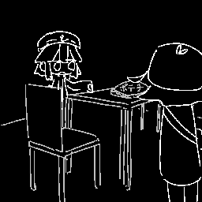
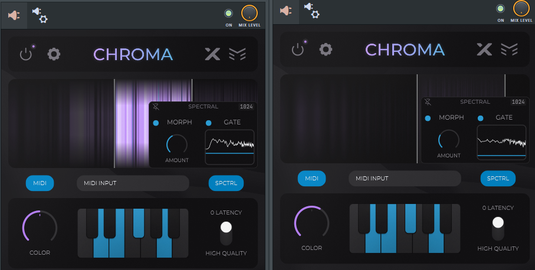

Tr.06 saaa feat.初音ミク - 応接間
制作期間：2026/01/27 ～ 2026/03/01
Genre: Hardstyle / Botanica BPM:160
『あの空間について判明していることは以下の通り。「夢の中でのみ潜入可能で、入る瞬間を知覚できない」「空間内に自分がもう一人いる」「その人物は自分の知らない知識を持っている」』
今回デザイン担当してくれたKeiuOさん主催コンピ『Relattice』から許可をいただいて収録！ありがとう……
Hardstyleの先入観からかけ離れた楽曲となっております
Botanica要素が混じってたり、ポップス的な転調をしたり、めちゃくちゃストーリー重視だったり……
ストーリー重視楽曲とHardstyle含むHard系ジャンルって結構相性悪いと思うんですよ（唐突）
音から連想されるイメージが「暴！！！！！」「アガるぜ～～～」みたいな感じなので、
それ以外の話を持ち込みたいときに非常に悩むのです
こういう時は、自分で道を開拓しましょう 先入観無視してやりたいことやりました
自分が拓いたものが受け入れられると、うれしいから……
この場に居合わせたHard楽曲作ってるみなさんへ
Euphoric要素のあるキックにはChromaなどでを薄っすらColourにしてあげると、そこそこスッキリする

前半：Chromaなし
後半：Chromaあり
MV化の予定はあったのですが、自分のイラスト・映像技術が足りなすぎて制作断念に至った過去があります
絵コンテ、キャラデザ等は完成してるので、誰か一緒にMV制作しませんか…………？